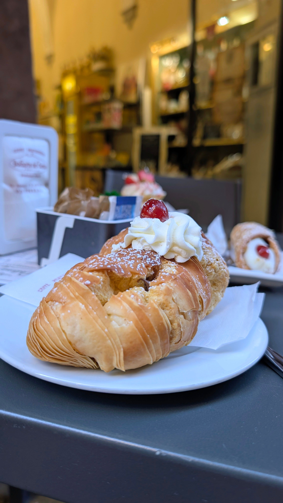

A step in Italy, right here in Sea Point
Handcrafted Italian-French pastries, made fresh every morning.
View Our ProductsWelcome to Passo in Italia
Founded by a South African pastry chef trained in Italy, Passo in Italia brings authentic cornetti, cannoli, tiramisu, and classic French patisserie to Cape Town, made fresh daily with quality, locally sourced ingredients.